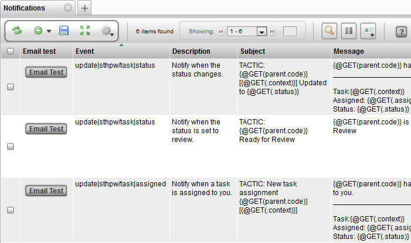
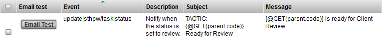
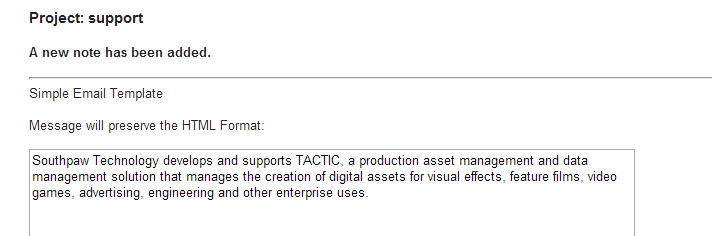

Advanced Notification Setup
The notification view is located in the TACTIC Sidebar under:
Site Admin → Notifications
This can also be accessed through the Workflow Editor, by right clicking on a node and selecting from the context menu Show Triggers/Notifications.
This view provides all the functionality required to set up the various types of notifications used to establish better production communication and instant status updates.

Insert Notifications
To insert a new notification, select from the sidebar:
Site Admin → Notifications
The following table explains the basic usage of each property.
| Event | The TACTIC event to execute the notification for |
|---|---|
Project Code |
The project code for the notification. This allows for filtering of notifications for a specific project |
Type |
The type of notification being sent. By default for notifications, this must be set to "email" |
Search Type |
The search type attribute identifies the parent sType if the event is for a task, note, or snapshot. It used to be achived by adding a rule as in Example 2. |
Mail_to |
An expression of the users to mail to in the email (supports multiple lines of expressions and / or email addresses and names of groups of users made in TACTIC) |
Mail_cc |
An expression of the users to mail to in the email. It will appear in the cc category. (supports multiple lines of expressions and / or email addresses and groups) |
Mail_bcc |
An expression of the users to mail to in the email. It will appear in the bcc category. (supports multiple lines of expressions and / or email addresses and groups) |
Note: The default is to email the person that causes the notification to fire through the event set up. To turn off this behavior, you can add an entry in Project Setting: key = email_to_sender , value = false.
Below are examples of what can be used in mail_to, mail_cc, or mail_bcc:
For example, email the user 'admin' only:
@SOBJECT(sthpw/login['login', 'admin'])
For example, send to the user related to this sObject. If this is an event for task update, the email will be addressed to the assigned user:
@SOBJECT(sobject.sthpw/login)
If it is already a task for the event update|sthpw/task, which contains the assigned or supervisor attribute, the email will be addressed to both by just retrieving these attributes in two lines.
@GET(sobject.assigned)
@GET(sobject.supervisor)
Let’s say you want something simpler and skip the use of task. If you have an sType called mystuff/manager that already contains an email address or comma separated email addresses in an attribute called email, you may want to email to the dedicated manager for a paricular shot. Assuming your shot sType mystuff/shot and mystuff/manager has a schema connection already, you can email them when updating your shot with the event update|mystuff/shot.
@GET(sobject.mystuff/manager.email)
If you want to email to the same manager David and a person named Carin defined in Users when updating any shots with the event update|mystuff/shot, there is no need to start off with the variable sobject representing the shot in transaction.
@GET(mystuff/manager['first_name']['David'].email)
@GET(sthpw/login['first_name']['Carin'].email)
For example, send to the user related to this sObject as well as the user 'john'. If the event is insert|sthpw/note, it will be the person who enters the note. If the event is 'update|sthpw/task', the person is the assignee of the task:
@UNION(@SOBJECT(sthpw/login['login', 'john']), @SOBJECT(sobject.sthpw/login))
To make these mail_to expressions more readable, put more than 1 expression or email addresses on multiple lines. There is no need for @UNION. @GET can even be used to just get to the list of login names.
For example, to send to everyone in the supervisor group, the assignee of a task, to all the users in the mangers group and the email address support@southpawtech.com, enter 3 lines under mail_to:
@SOBJECT(sobject.sthpw/login)
@GET(sthpw/login_in_group['login_group','supervisor'].login)
managers
support@southpawtech.com
More on Expressions in Notifications
The word "sobject" often appears in the Mail to: column but not in Message or Subject. This is because the implementation allows sending notifications to users related to the current sObject or just about anyone not necessarily related to the current sObject. As illustrated above, @SOBJECT(sobject.sthpw/login) is the task assignee but the users under the group supervisor is not related to this task and so the keyword "sobject" is not used. In the Message area, to refer to the current sObject status (task status if the event is update|sthpw/task), just use an @GET(.status), as the sobject is always assumed to be in this context.
Task related notification
To establish the relationship between the login search type and task search type, the following built-in schema line is used. It is not necessary to add it to the schema. It can be used as an example to create a custom search_type.
<connect to='sthpw/task' relationship='code' from_col='login' from='sthpw/login' to_col='assigned'/>
Note related notification
To establish the relationship between the login search type and note search type, the following built-in schema line is used. It is not necessary to add it to the schema. It can be used as an example to create a custom search_type and to edit the schema.
<connect to='sthpw/note' relationship='code' from_col='login' from='sthpw/login' to_col='login'/>
Sending a notification to the person who just entered the note is not often used. Instead, an email handler can be used in this situation to send to the supervisor and assignee of the task under the same context. A built-in email handler is called "pyasm.command.NoteEmailHandler". Instead of entering it into an expression for mail_to, enter it into the email_handler_class field.
Email Test

Once the fields event, mail_to, and message are properly filled in, to test the email, click on the Email Test button. It catches syntax errors or typos in expression in these fields as well as reporting any email server error if the service section of the TACTIC config file has not been properly filled in. Settings like firewall and TLS settings may also block an email from being sent out.
Example 1:
In this example, the notification will be sent out each time a ticket is updated. It will also only send to users in the 'admin' and 'moderator' groups.
Event |
update|support/ticket |
Description |
Sent when tickets are updated |
Subject |
|
Message |
[multiblock cell omitted] |
mail_to |
admin , user@gmail |
Rules |
[multiblock cell omitted] |
Email Handler Class |
[multiblock cell omitted] |
Project Code |
support |
Type |

Example 2:
In this example, the notification will be sent out each time a shot-based note is updated. It will send to manager’s group and everyone assigned to the tasks of the shot. Since project_code is left empty, this works across all the projects in the system.
Event |
insert|sthpw/note |
Description |
Sent when shot-based notes are added |
Subject |
{$PROJECT} {@GET(parent.sequence_code)} - {@GET(parent.code)} {@GET(.process)} |
Message |
|
Rules |
|
Email Handler Class |
[multiblock cell omitted] |
Project Code |
[multiblock cell omitted] |
Type |
|
mail_to |
|


Example 3:
In this example, the notification will be sent out each time a note is added. It also allows users to have their own Email Message Template and preserve its html format.
Event |
insert|sthpw/note |
Description |
Sent when new note is added |
Subject |
TACTIC: a new note has been added. |
Message |
|
Rules |
[multiblock cell omitted] |
Email Handler Class |
[multiblock cell omitted] |
Project Code |
[multiblock cell omitted] |
Type |
|
mail_to |
admin, |


Notification Expressions
TACTIC uses the TACTIC Expression Language to build dynamic Notification Subject and Message contents. This allows for each notification to be sent based on properties from the Search Objects it is being sent for.
In the simple example Subject below, the "id" property is used from the "ticket" search object.
TACTIC Ticket {$GET(.id)} has been updated
The expected results of this would be similar to the following:
"TACTIC Ticket 14 has been updated"
Example 1
In essence, anything between the curly brackets "\{}" is evaluated as an expression by TACTIC.
Note
For more information regarding TACTIC Expression Language please refer to the TACTIC Expression Language docs
Filtering Notifications
TACTIC’s notification architecture is a rules-based system built using the trigger architecture. Every time a command is executed, TACTIC looks through the list of defined triggers (including notifications) for a match. Under the Triggers view will be an entry for the EmailTrigger class that is registered under the "email" event. It is possible to create custom Email Trigger handlers in that view.
There are 3 main criteria used to filter out notifications:
-
group: Filters out notifications to be sent only to users in the included groups.
-
project: Filters out notifications so that only a certain project can fire the email trigger.
-
rules: Rules are an XML snippet which can finely control the conditions when an email trigger may be fired.
Groups
By planning groups to send notifications to, it allows for simple connections for deciphering which groups of users will receive notifications when the conditions of a particular notification rule are met. Once a notification has been created, it can be associated with any number of groups of users. All users in this group will then be sent a notification when the rule is triggered.
The Groups view can be found under:
Admin→Site Admin →Groups
To specify a group to send a notification to, specify the group in the mail_to column.
Project
By setting the project in the project column of a Notification, TACTIC will only use the notification trigger for the chosen project.
Access Rules
When a notification rule has passed all of the criteria, a message is constructed. Most email events occur after a command has been completed. The email handler then takes the information from the command and creates a default message to be sent to the appropriate people.
All rules are contained in groups. For notifications, there are a few predefined groups:
Example 1
This rule group only allows tasks for prod/asset for the project sample3d to send out notification. Otherwise, it would send out notifications for tasks of all search types
<rules>
<rule>@GET(.search_type)=='prod/asset?project=sample3d'</rule>
</rules>
Example 2
This rule group makes use of a key/value pair of attributes: that is, when the attribute with the value of "key" is equal to "value", the rule is passed. In the example below, all SObjects containing the attribute "context" with the value "client" are triggered.
(deprecated)
<rules>
<rule group="SObject" key="context" value="client"/>
</rules>
<rules>
<rule>@GET(.context)=='client'</rule>
</rules>
Example 3
For certain SObjects in TACTIC (like tasks), parent attributes can be used for constructing rules. The concept behind this is the same as group="sObject", but now we are referring to the parent of a task (for example, a 3D asset). This notification will only be sent if the task’s parent, a 3D asset, is categorized under the "prp" asset library.
<!-- DEPRICATED -->
<rules>
<rule group='parent' key='asset_library' value='prp'/>
</rules>
<rules>
<rule>@GET(prod/asset.asset_library)=='prp'<rule>
</rules>
Example 4
For notes in TACTIC, we may have 2 processes for notes (e.g. anim, anim_2) We can check if the process partially contains the word anim by the following:
<rules>
<rule>'anim' in @GET(.process)<rule>
</rules>
Note: list comparisons like @GET(.process) in ['anim','anim_2'] are not supported
Example 5
For a check-in notification in TACTIC, we can choose to send only if the is_current attribute is True for the event insert|sthpw/snapshot by the following:
<rules>
<rule>@GET(.is_current)==True<rule>
</rules>
Email Handler Class
Each time a notification is executed, TACITC uses either the default email handler or it uses and email handler override defined by the Email Handler Class property for the notification.
The Email Handler Class digs deeply into the structure of the notifications using Python and the TACTIC client API. It is only needed for very specific rules which determine when a notification is sent.
An example override is shown below:
Email Hander Cls: sites.support.email.TicketEmailHandler
__all__ = ['TicketEmailHandler']
from pyasm.common import Environment, Xml, Date
from pyasm.security import Login
from pyasm.search import Search
from pyasm.biz import GroupNotification, Pipeline, Task, Snapshot, File, Note
class TicketEmailHandler(object):
'''Email sent when a ticket is updated'''
def __init__(my, notification, SObject, parent, command):
my.notification = notification
my.sobject = SObject
my.command = command
my.parent = parent
def check_rule(my):
'''determine whether an email should be sent'''
return True
def get_to(my):
ticket = my.sobject
user = ticket.get_value("login")
login = Login.get_by_login(user)
recipients = []
recipients.append(login)
return recipients
def get_cc(my):
admin = Login.get_by_login("admin")
recipients = []
recipients.append(admin)
return recipients
def get_subject(my):
ticket = my.sobject
title = "Ticket Number: "
id = ticket.get_value("id")
return "%s%s" % (title, id)
def get_message(my):
ticket = my.sobject
id = ticket.get_value("id")
subject = ticket.get_value("subject")
summary = ticket.get_value("summary")
status = ticket.get_value("status")
msg = []
msg.append("Ticket: %s" % id)
msg.append("")
msg.append("Status: %s" % status)
msg.append("")
msg.append("subject: %s" % subject)
msg.append("Summary: %s" % summary)
msg.append("")
return "\n".join(msg)